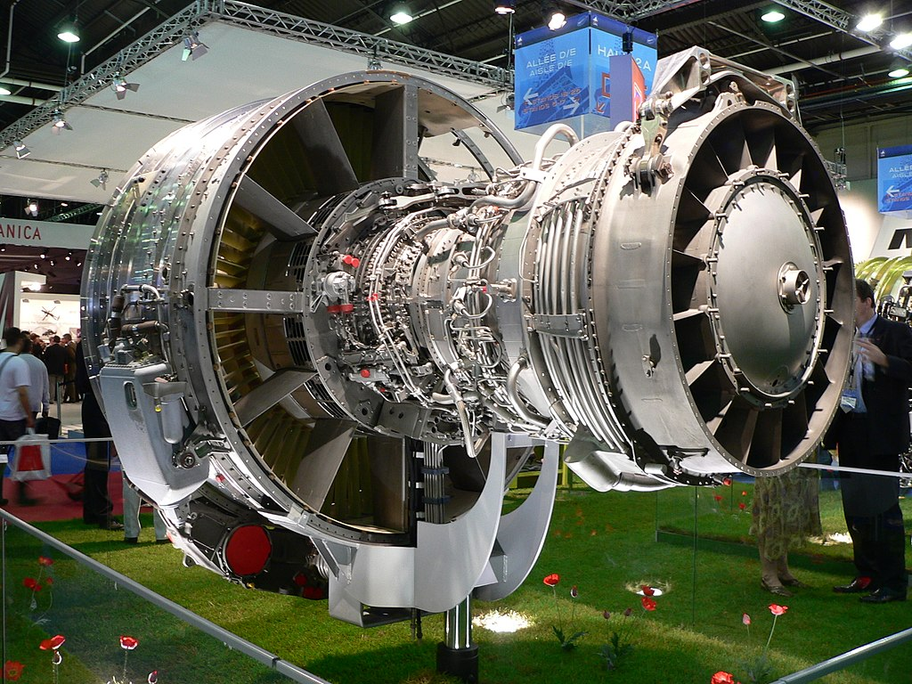
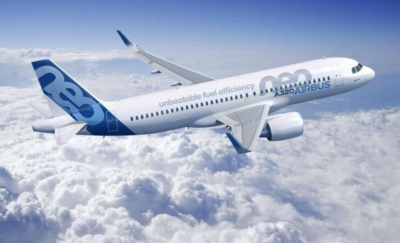

El Airbus A320 es un avión comercial de reacción, de fuselaje estrecho y de corto a medio alcance, desarrollado por Airbus SAS, una compañía francesa actualmente controlada por la corporación neerlandesa Airbus SE.
Existen diversos modelos derivados del A320, entre los que se incluyen las versiones cortas A318 y A319, la versión alargada A321, y los aviones de negocios ACJ. El ensamblaje final de estos aviones en Europa se lleva a cabo en Toulouse (Francia) y Hamburgo (Alemania). Desde 2009, también hay en funcionamiento una planta de ensamblaje en Tianjin (China) donde se produce este tipo de aeronave para las aerolíneas chinas. Además, el 14 de septiembre de 2015, Airbus inauguró una planta de montaje de la familia A320 en Mobile (Estados Unidos). y, el 21 de marzo de 2016, efectuó su primer vuelo el primero de los aparatos montados en ella, un A321 sharklets destinado a la compañía JetBlue. Los modelos derivados del A320 tienen una capacidad máxima de 220 pasajeros y un alcance que va desde los 3100 hasta los 12 000 km, dependiendo del modelo.
La primera versión del A320 se lanzó en marzo de 1984, siendo su primer vuelo el 22 de febrero de 1987, y puesto en servicio el 28 de marzo de 1988 con Air France. Posteriormente se desarrollaron el A321, que entró en servicio en 1994; el A319, que lo hizo en 1996; y el A318, en 2003. El A320 fue el primer modelo de avión comercial con sistema de control de vuelo con mandos electrónicos digitales y también con palancas de control laterales. En este aspecto ha habido un proceso de mejora continua desde su introducción.
El 1 de diciembre de 2010, Airbus lanzó oficialmente una nueva generación de la familia A320 denominada A320neo (New Engine Option).Esta se ofrece con motores CFM International LEAP-1A o Pratt & Whitney PW1000G, que combinados con mejoras en la estructura y la incorporación de sharklets, permitirá un ahorro de combustible de hasta un 15 %. Virgin America era el cliente de lanzamiento previsto del A320neo para la primavera de 2016, pero se cambió a Qatar Airways, que rechazó su primera entrega por problemas con los motores Pratt & Whitney PW1000G. Finalmente, fue Lufthansa quien, el 20 de enero de 2016, recibió el primer A320neo equipado con motores Pratt & Whitney PW1000G, registrado D-AINA, y que entró en servicio comercial el 24 de enero de 2016 entre Fráncfort y Múnich.
A fecha de 31 de diciembre de 2011, unas 21 aerolíneas ya habían hecho pedidos que sumaban un total de 1196 aviones de la familia A320neo, convirtiéndolo en el avión comercial más rápidamente vendido. A finales de diciembre de 2015, se habían entregado un total de 4075 aviones del modelo A320 y, de un total de 7633 pedidos, quedaban 3558 unidades aún por ser entregadas. La familia está clasificada como la familia de aviones comerciales de reacción más rápidamente vendida del mundo según los datos registrados entre 2005 y 2007, además de ser el avión de una única generación mejor vendido.